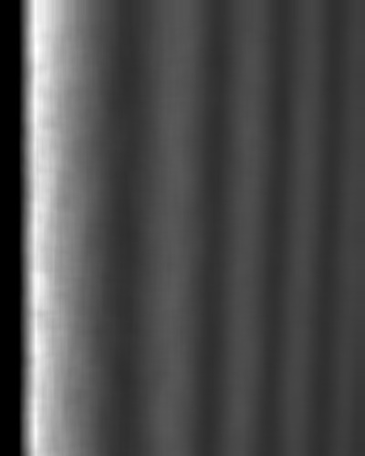
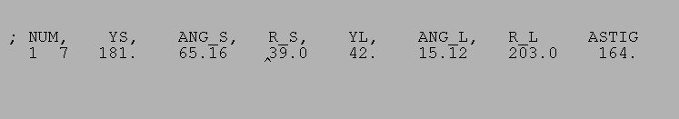

| .OPERATION: | RI RV | ; Find ridges and valleys |
| .INPUT FILE: | sav_por_sm | ; File name (input) |
| .OUTPUT DOC FILE: | rirv_doc | ; Doc file name (output) |
| .SEPARATION AND SUMMED LINES: | 50, 2 | ; Exclusion distance and summing |
| .MIN DISTANCE TO FIRST RIDGE AND DOC FILE KEY: | 150, 1 | ; Minimum distance and key |
| INPUT IMAGE | OUTPUT DOC FILE |
|---|---|
|  |  |
| sav_por_sm | rirv_doc |